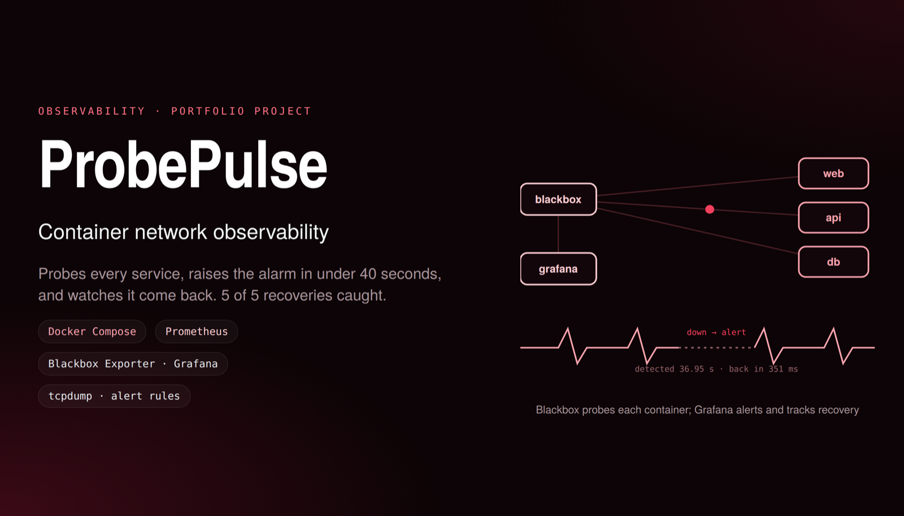

Observability Self-driven
ProbePulse
Docker Compose lab that detects HTTP, connection and DNS failures. Prometheus Blackbox probes and Grafana alerts caught outages with a 36.95 s median; operator-approved recovery brought 5 of 5 back, 351 ms after approval.